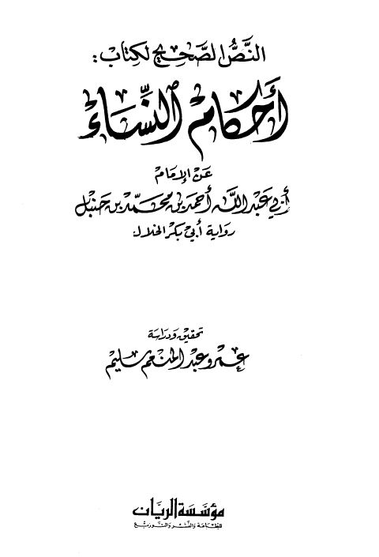
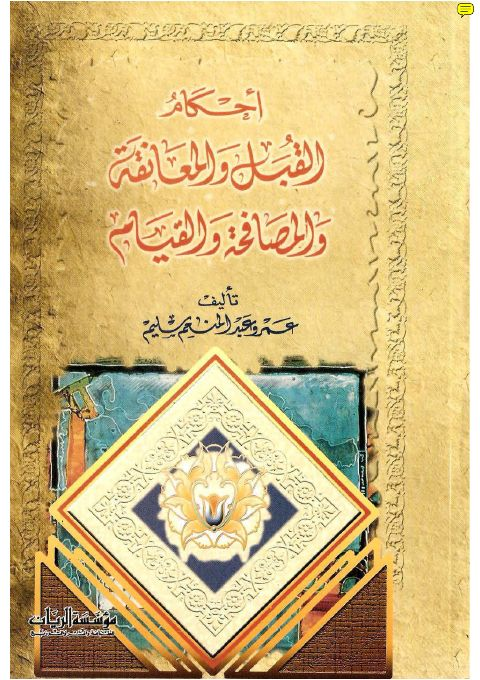
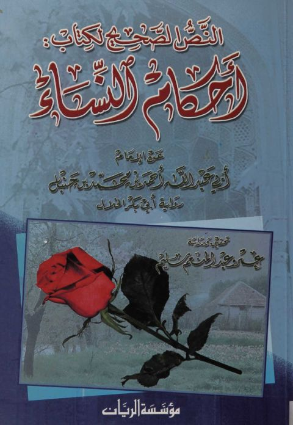
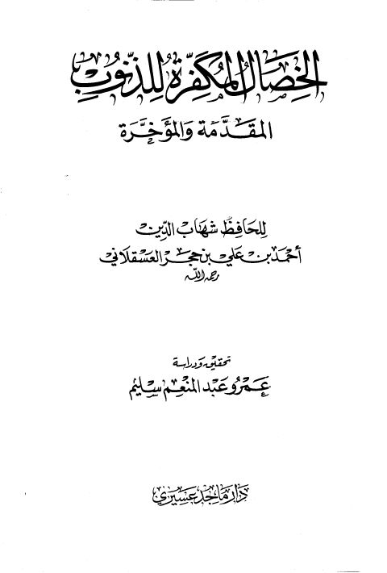
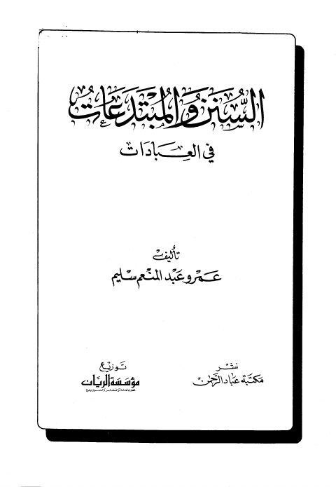
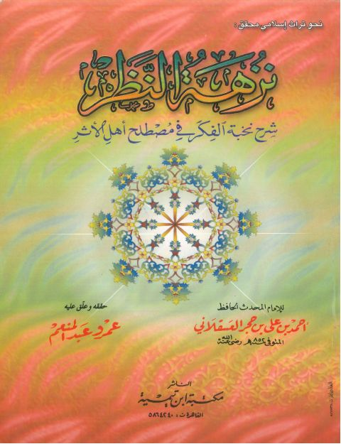

النص الصحيح لكتاب أحكام النساء عن الإمام أحمد بن حنبل رواية أبي بكر الخلال النص الصحيح لكتاب أحكام النساء عن الإمام أحمد بن حنبل رواية أبي بكر الخلال أحمد بن حنبل
أحكام القبل والمعانقة والمصافحة والقيام أحكام القبل والمعانقة والمصافحة والقيام عمرو عبد المنعم سليم
النص الصحيح لكتاب أحكام النساء النص الصحيح لكتاب أحكام النساء أبو عبد الله أحمد بن محمد بن حنبل
الخصال المكفرة للذنوب المقدمة والمؤخرة الخصال المكفرة للذنوب المقدمة والمؤخرة ابن حجر العسقلاني
السنن والمبتدعات في العبادات السنن والمبتدعات في العبادات عمرو عبد المنعم سليم
نزهة النظر شرح نخبة الفكر نزهة النظر شرح نخبة الفكر أحمد بن علي بن حجر العسقلاني